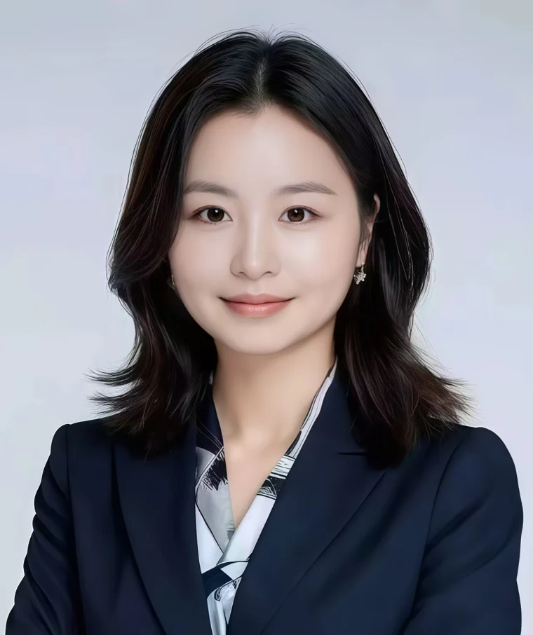

组织与人才战略
组织设计、关键人才、HR 体系从 0 到 1，把人才决策放回业务场景。
PEOPLE LEADER · ORGANIZATION BUILDER · ICF PCC
我是周雪虹，Zoe Zhou。连接业务战略、组织建设与领导者成长，帮助科技企业把增长的挑战，转化为人才与管理的行动。
北京 · 中英双语 · 面向全球团队

01 / ABOUT
从联想的全球人才发展与并购文化整合，到滴滴、阿里云的业务 HRBP，再到毫末智行的 HR 负责人，我的工作始终围绕一个问题：组织如何跟上业务的变化？
2023 年起，我通过禾光思想 HG Center 的咨询与高管教练实践，持续支持创业及成长型企业。外部顾问的视角与内部 HR 的经验，让我既能看清问题，也能把建议落实为组织机制。
下一阶段，我希望加入正在成长、组织升级或全球化的科技 / AI 企业，在 People Leadership、HRBP 或组织发展岗位上，长期参与团队建设。
组织设计、关键人才、HR 体系从 0 到 1，把人才决策放回业务场景。
目标拆解、OKR / 绩效对话、管理节奏与跨团队协同，让战略进入日常。
管理者转型、专业教练、跨文化协作与文化整合，兼顾系统和个体。
02 / SELECTED IMPACT
三个代表场景，呈现我如何把业务压力转化为组织行动。
毫末智行 · HR Director / 北京团队 HRBP Leader
管理者培养围绕目标管理、反馈辅导、授权和跨团队协作展开。重点是让新管理者不仅理解方法，也能在实际绩效对话和管理节奏中使用方法。
阿里云 · HR Business Expert / 大客户业务 HRBP
先理解收入目标与业务链路，再识别关键岗位、团队协作和领导者能力的瓶颈。HR 的价值体现在帮助团队作出更好的取舍，并承担执行结果。
联想 · 组织发展顾问
文化整合需要进入具体的管理语言、人才发展项目与协作方式。我的实践着眼于帮助不同背景的团队建立共同理解，而后形成能够持续运作的机制。
03 / EXPERIENCE
人才与组织发展 → 业务 HRBP → HR 负责人 → 顾问与高管教练
2023.10 — 至今
HR 与组织管理顾问 · ICF PCC 高管教练
为创业和成长型企业提供组织诊断、HR 体系搭建、绩效机制与管理者发展支持；通过 BetterUp 开展全球企业管理者领导力教练。
组织顾问 / 高管教练2021.06 — 2023.09
HR Director · 北京团队 HRBP Leader
支持 AI 产研团队扩张，承接公司级 OD、绩效和管理者发展项目，连接招聘、组织配置与管理机制。
AI / 从 0 到 12020.06 — 2021.06
HR Business Expert · 大客户业务 HRBP
支持销售和售前团队，把关键人才、绩效责任和团队协同嵌入业务增长节奏。
业务 HRBP / GTM2017.10 — 2020.06
HRBP Manager
在业务转型和组织调整中支持团队稳定、复杂员工关系与绩效治理，提升区域运营的管理纪律。
组织变革 / 员工关系2015.08 — 2017.10
人才发展经理
在全球化扩张与组织调整阶段，搭建领导者发展、人才管理及运营协同机制。
人才发展 / 全球化2011.07 — 2015.08
组织发展顾问
参与 Motorola 并购文化整合及全球管理者、高潜人才、管培生和新员工发展项目。
全球 OD / 文化整合04 / BUILDING & LEARNING
近期的个人探索：将组织与管理知识拆成工作流、交互原型和研究框架，让 AI 成为专业判断的辅助。
把模糊的组织问题拆解为澄清追问、问题分类、框架匹配和 30 天系统实验。
从创始人、团队、组织机制三层观察问题，结构化输出诊断摘要、访谈问题和行动计划。当前聚焦知识模型与本地交互原型，尚未形成生产级 AI 服务。
面向新任管理者，连接启动诊断、7 天行动、管理场景分析、沟通话术与复盘。
原型支持个人画像、行动打卡与本地进度记录。Coach 模块目前使用本地规则引擎模拟，尚未接入真实大模型 API；重点验证管理学习如何进入日常动作。
用国家 / 地区导航连接劳动法与政府官方来源，为跨国 HR 信息检索建立清晰入口。
通过主题、国家和官方链接组织信息，强调来源可追溯与信息分层。它是资料检索入口，具体用工决策仍需结合最新法规和当地专业意见。
05 / LET’S CONNECT
欢迎科技 / AI 企业、招聘团队与猎头联系我，讨论 People Director、HR 负责人、HRBP Leader 或组织发展岗位。也欢迎关于创始人顾问与领导力发展的交流。
北京 / GMT+8 · 优先远程或灵活混合办公